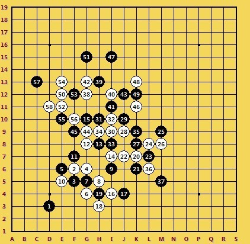

【棋评】【暑假杯】翻江倒海 二龙戏珠——全盘控制与连接
作者： xiaowei
神话1台第三轮棋评
【棋评】【暑假杯】翻江倒海 二龙戏珠——全盘控制与连接
#1 【棋评】【暑假杯】翻江倒海 二龙戏珠——全盘控制与连接 作者：蓝天蓝 发表时间：2013-8-29 10:43:05
对局链接： http://game.freewzq.com/offlineDisplayGame.html?html=1626640&id=1833
对局结果：弈星一台wujigeng 负 神话一台xiaowei
这轮对阵弈星队，对手是wujigeng，对方先手。第一手仍然是D13这个落得最多的点，我没有选择交换，第二手落在F6，感觉这个点白棋控制起来容易一些，对方的3手落在了F5，形成一个跳活二，第4手我很自然的就挡在了G6了，挡二成二。
黑7只能塞在G5，断掉白棋的连接，当时白8考虑过走E5，但是想到黑棋挡在G7以后白棋很难受，就没这样走，参考图如下：

最终8手选择了H5，成两个2，看黑棋应对。第9手对方走I6，挡掉了白棋的拓展点，对白棋形成包夹之势，白棋如果现在活三的话，只能给黑棋增加子力，而左边的黑棋子力很多，白棋又不能单单去右边做棋，无奈之下选择了E5，跟黑棋来交换几手。
白棋两个活二，黑棋肯定会挡掉一个，对方选择了挡在F7，G8就成了黑棋的好点，我只能先占上
13手的选择大致有两种，第一种就是挡在G7，看白棋防左还是防右，然后在另一侧进攻，感觉是一个强点。另一个13就是H8，占掉白棋的关键点，同时把握住外势，是一个比较好的控制点。对方选择的正是第二种，对盘面进行控制，寻找机会。由于I7点黑棋可以一子通4路，这个点不能给黑棋占上，我就直接先占在了I7点
到此，形成一个黑白基本平衡的局面，现在轮到黑方走，黑棋稍占优势，15手对方走G10，开始去上面进攻，15手跟左右的黑棋都有一定的连接关系，如果单纯去上面死防的话很难防住，只能利用下面的子力对上面形成一定牵制，因为黑棋现在没有活二，所以白棋暂时可以做出二级连攻胜来局部进攻。16手我选择了I4,。
这样黑棋就必须要过来管一手了，如果17挡在H4，那么白棋就可以继续在右边找到好点做二级连攻，对黑棋威胁是很大的，参考图如下：
当然，对手也看到了这点，不能让白棋向右边延伸，对方防在J4，把白棋压缩在下面的角落里，白棋一定要想办法跳出角落，带一点东西出去，用来牵制上面的黑棋。18手我选择了H3，又做了两个2。
就局部来看，白棋的形状是比较恐怖的，但现在是在盘边上，所以其实不难防住。19手对手进行了长考，可能是怕走弱了白棋下面有胜。最终19手选择了一个比较保守的点H4，老老实实的塞了进去，很明显，这样白棋下面不可能再有胜了
对方这样的19手，我还是比较满意的，因为黑棋没有形成一个活二，白棋还是可以选择好点做棋，只要做出二级连攻即可。20手一定要往上面带了，把白棋带上去， 因为下面空间没了，弄不出什么了。20手选择了K7。
20手与上下的白棋都有一定的联系，跳出了黑棋的包围圈，成功的把子力借到了上方。21手对方走在K6，断掉白棋一个活二，自己成一个二。J7这个点不能给黑棋占到，所以22手活三，23挡在右边
现在黑棋有了两个活二，白棋也有所顾虑了，24不能简单的挡黑棋一手，一定要与其他子力有连接，假设24挡在了M8，与白子没有连接，那么黑棋就可以做出二级连攻胜，发起凶猛进攻 ，参考图如下：
［ 釣鱼岛岛主同学于 2013-8-31 22:55:18 时花20金币送鲜花一朵］
［ 釣鱼岛岛主同学于 2013-8-31 22:55:18 时花20金币送鲜花一朵］
［ 釣鱼岛岛主同学于 2013-8-31 22:55:18 时花20金币送鲜花一朵］
#2 Re:【棋评】【暑假杯】翻江倒海 二龙戏珠——全盘控制与连接 作者：蓝天蓝 发表时间：2013-8-29 10:44:23
最终我的24走在了L8点，形成一个与其他白棋有连接的活二。25手对方盖在了M9。
从对方的行棋思路来看，对手是想抱着中间这块白棋，然后利用外势取胜。26手M8挡黑棋活二，27手K8又挡回来，28手又挡回来。
这几步的交换逐渐的让黑棋占有外势，但白棋中间保留了一定的子力连接。29手对方果断盖在J10，继续成包夹之势。30 I9又是一子通三路，多了一些连接。
31手对方H10继续进行交换，32自然I10,白棋有连续冲四胜，所以33挡在I8，断掉关键连接。34 H9活三，35挡右边唯一，交换完这几步，形成如下局面
由于白棋成功的把子力借到了上面，从而了化解了上面的危机，就外势来看黑白基本平衡，现轮白方走棋，所以白棋稍优。
36手我走在L6，目的是想把右下角交换干净，37手黑棋必须跟防，不然的话，白棋可以在右下展开攻击。参考图如下：
所以37手对方选择了盖在M5，下面的黑棋也没有什么连接，我也就没再多考虑了，把注意力转向上面。上面的优势来自于两个眠三一个眠二，一定利用好，拓展出外势，不然的话，则可能被黑棋包夹。
38手我选择了G12，做了一个跳眠三，抢外势的同时与另外两个眠三有一定的连接关系。
对方应该感觉到了压力的存在，39手又进行了长考，最终选择了H13点，进行外势的争夺。I12又是白棋的一个好点， 横竖斜都有一定连接，我就继续做棋I12.
白棋集中了4个眠三，对手小心应对I11。，挡掉一个眠三，同时对另外两个眠三形成牵制，
让白棋的进攻受到阻挠。在这里算了很久，因为其他三个台次两胜一负，我这台就成了取胜关键，不能有失误。开始想强攻拓展出去取胜，如42走G13，43 J12,44 G9，45 F9,46 G14,47 G15，48 F13跳冲，50手E12活三，这样白棋就可以必胜了。参考图如下：
之后又重新拆解后发现，47手对方不一定会挡上，如果对方挡下的话，白棋就无法取胜，而多了这几步交换，反而让黑棋的防守变得更容易。这样消耗掉自己的材料又无法取胜，得不偿失。于是最开始的计划就放弃了。42仍然是考虑走G13,43走J12,44 G9冲，45 F9挡。参考图如下：
如此定型也是无奈，因为没有找到更好的思路，而现在46手又不能进行强攻，只能下的柔和一点，挡在了K11.占掉了对方的好点，让黑棋取胜无望，而和棋的话，我们队仍然会以2.5分取胜。对方也明白，他只有取胜才有意义，所以47手下出了出乎意料的点I15。
看上去不太符合常规，但仔细思索以后，发现这是对方的一种策略，就局面而言，如果黑棋在某个位置明显的进攻，白棋紧跟防，完全可以防住，白棋可以保证不败，但面对这个47手，目前对白棋并没多大威胁，白棋还可以在左边继续进攻，但是一旦左边攻不下来，或是交换的不好，黑棋腾出手来，再利用47连接，不仅有外势，也多了连接，白棋可能会变得很危险。47手可以称之为诱攻，诱导白棋去进攻，从而局面变得激烈，而不会和棋。48手我挡在了K13，而没有去左边进攻，我的想法是在不败的情况下再寻求取胜。
49手一般来说两种，J11或者K12，从我的角度来看，希望对方走在K12，虽然把这个四三挡干净了，但是黑棋也没有形成什么东西，我就可以放心在左边行动了，白棋优势很大，即使左边攻不出来，想和棋也不难。我担心的是49手挡J11，虽然给白棋留了一个2，但是白棋在右边取胜是不可能的，那个2难以利用，而黑棋则多了一个眠三和一个眠二，若50手白棋想先交换掉这个眠三，如50走K14,51挡里边，52走J13,53挡L15,54走L13,55挡M13.这样定型以后，右边的黑棋就占尽了外势，白棋就不能肆无忌惮的在左边展开。一旦黑棋拿到先手，黑棋在右边有取胜的可能。参考图如下：
不过，49对方挡在了K12点，我的担心也就消失了。50手终于可以在左边展开了。走了E12。
黑棋的强防还是比较多的，无论挡在F13还是H11，白棋都不足以取胜，当然和棋也是个不错的结果，我们队仍然总比分胜。奇怪的是这两个强防对方都没走，而是走了G15.
又一次诱攻出现了，显然对方是不想和棋，即使输也不和，面对这个51，我又出现了两种想法，第一种就是不攻，就去单防，比如挡在H15，多半是和棋。第二种就是攻，因为对方出现了弱手，很可能白棋可以胜了，再三计算之后，找到了进攻的强点，于是选择了进攻。52手落E11，53挡F12唯一，54走E13活三，55挡E10,56 F16.
交换到这里以后，白棋左边优势但不足以必胜，上面黑棋有一定外势，57手我一直担心对方挡在F13，这样的话，白棋左边基本没有什么进攻能力了，只能快速回防。可能是对方时间不太多了，没考虑太细，57手挡在了C13，也是一个强防，但是白棋有一些骗招。58果断走在D11开始欺骗

59对方挡在四三点F13,60手C11活三。计算的强防是黑棋挡左边，然后62在E9继续骗，黑棋就只有唯一的一路防了，如果防对了就是和棋。参考图如下：
然而对方的61没有挡左边，而是挡在右边，做了一个四三胜，如果62挡在F14，反做四三，仍然可以抢回先手获胜，后来又发现62若在B10活三，可以对对方的四三形成反四，直接取胜。62选择了B10活三，若黑棋挡在里面的话，白棋下面二级连攻胜，参考图如下：
实战对方63 F14冲四，64挡F15，对方思考了一会，发现没有防了就认输了。
全图如下:
［此帖子已被 蓝天蓝 在 2013-8-29 11:02:20 编辑过］
#3 Re:【棋评】【暑假杯】翻江倒海 二龙戏珠——全盘控制与连接 作者：棋空 发表时间：2013-8-29 23:18:08

#4 Re:【棋评】【暑假杯】翻江倒海 二龙戏珠——全盘控制与连接 作者：棋空 发表时间：2013-9-1 11:36:19